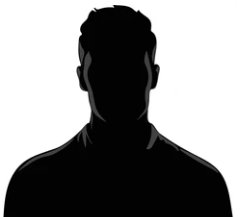

Ceràmica
Laia Font
Ceramista especialitzada en peces funcionals i processos de baixa temperatura.
Veus de l’ofici
Professionals de diferents disciplines comparteixen processos, tècniques i experiències al voltant de l’artesania contemporània.

Ceramista especialitzada en peces funcionals i processos de baixa temperatura.
Fuster artesà dedicat al disseny d’objectes quotidians amb materials recuperats.
Dissenyadora tèxtil centrada en fibres naturals, tintes vegetals i processos lents.
Joier contemporani que treballa amb metall reciclat i formes inspirades en la natura.
Enquadernadora artesanal especialitzada en llibretes úniques i restauració de paper.
Artesà del vidre que combina tècniques tradicionals amb aplicacions contemporànies.
Les jornades es distribueixen en blocs de matí i tarda, combinant diferents formats per afavorir l’aprenentatge i la participació activa.
Cada sessió està pensada per ser accessible tant a professionals com a persones amb interès inicial en el sector.
L’accés a les ponències és lliure fins a completar l’aforament, però algunes activitats requereixen inscripció prèvia.
Es recomana consultar el programa amb antelació i reservar plaça en aquelles activitats amb més demanda.